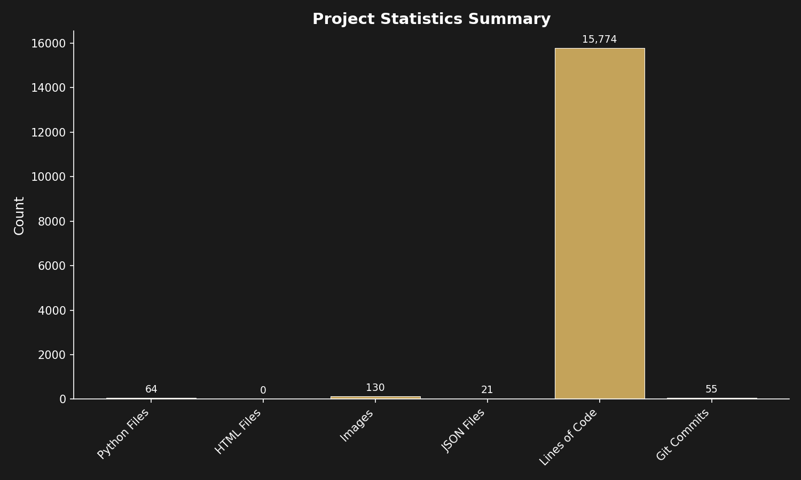

About the Project
Project Overview
The Shroud Reconstruction Project is a computational forensic analysis initiative that applies advanced imaging techniques and 3D reconstruction methods to study the Turin Shroud. The project combines photogrammetry, neural network-based depth estimation, and geometric analysis to generate detailed 3D representations from the historical image data.
Project Scale
The following table summarizes the computational work and outputs produced by this project:
| Metric | Count |
|---|---|
| Python Analysis Scripts | 64 |
| JSON Configuration Files | 21 |
| Git Commits | 55 |
| Total Lines of Code | 15,774 |

Technical Approach
The methodology employed in this project utilizes:
- Photogrammetric analysis of high-resolution source images
- Neural network-based depth map generation
- Wavelet and frequency-domain analysis
- Bilateral filtering for noise reduction
- 3D surface reconstruction and visualization
- Comparative analysis with historical documentation
Data Sources
All analysis is performed on processed depth maps stored in data/final/ and original photographic sources in data/source/. Visualization outputs are saved to both output/analysis/ for raw results and docs/images/ for web display.